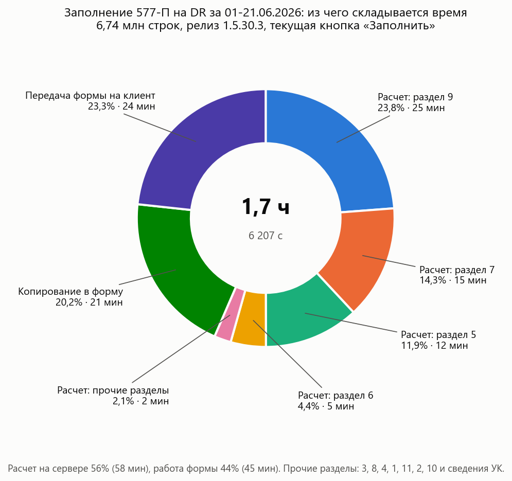
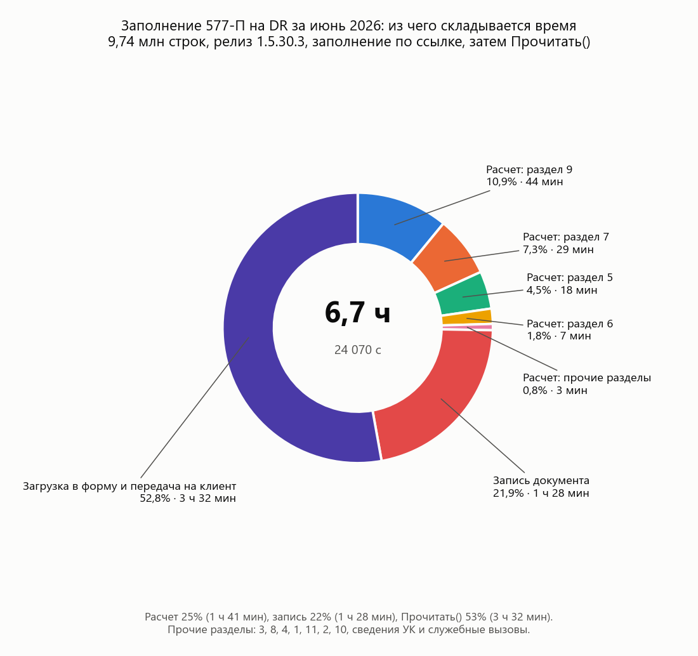
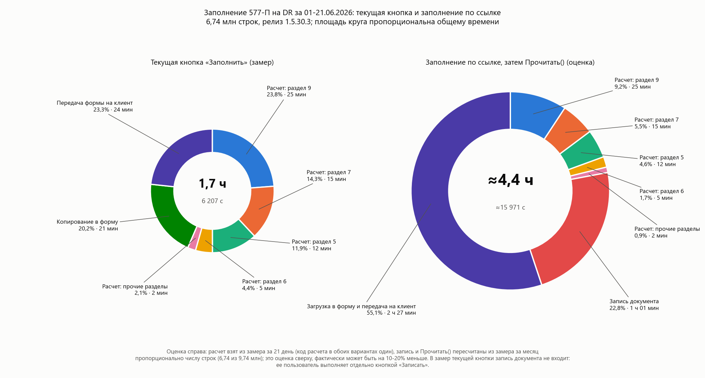

Тема: 577-П, заполнение за месяц: причина ошибки памяти и прогноз объема
Коллеги, добрый день.
Ниже результаты проверки заполнения документа «(XBRL6.1) Отчет по внутреннему учету 577-П» за июнь 2026 года на релизе ДУ 1.5.30.3: тест на UAT2 от 08.10.2026, замеры на DR-контуре (оборудование как на продуктиве) за 1 день, 2 дня и 21 день, заполнение полного месяца на DR от 09.10.2026 и прогноз на месяц в сравнении с фактом.
Условия: период июнь 2026 года, все разделы. Кнопка «Заполнить» была изменена так, чтобы расчет выполнялся на сервере по ссылке на документ, без копирования данных в форму. Через 2 226 с (37 мин) расчет прервался с ошибкой:
«Превышен максимальный расход памяти сервера за один вызов» в процедуре ЗаполнитьОтчет() модуля документа.
К моменту падения в документе было накоплено:
| Раздел | Строк | Время раздела, с | Комментарий |
|---|---|---|---|
| 2 | 1 360 | 1 | |
| 3 | 143 795 | 86 | |
| 5 | 478 452 | 1 329 | запрос выполняется по каждому дню, около 37 с на день |
| 6 | 701 530 | 538 | запрос по каждому дню |
| 7 | 950 249 | 263 | обработано 8 дней из 30, падение на 9-м дне |
| Итого | 2 275 386 | 2 226 | разделы 8, 9, 1, 4, 10, 11 не начинались |
Причина. В релизе 1.5.30.3 разделы 5, 6, 7 и 9 считаются запросом за каждый день периода, и это снизило память на результаты запросов. Но строки всех дней по-прежнему накапливаются в табличных частях одного объекта документа в рамках одного серверного вызова. Лимит кластера на один вызов был исчерпан на 2,28 млн строк, еще до окончания раздела 7. Форма документа в этом тесте не участвовала: падение произошло в самом расчете.
Текущая кнопка «Заполнить» релиза 1.5.30.3, периоды 01.06.2026, 01.06-02.06.2026 и 01.06-21.06.2026. Все три прогона завершились без ошибок. На DR-контуре не задан лимит памяти сервера на один вызов, поэтому документ за 21 день, который в 2,2 раза больше объема на момент падения на UAT2, заполнился до конца.
| Показатель | 1 день | 2 дня | 21 день |
|---|---|---|---|
| Заполнение всего, с | 343 | 556 | 6 207 |
| расчет на сервере, с | 197 | 316 | 3 506 |
| копирование в форму, с | 21 | 36 | 1 255 |
| передача формы на клиент, с | 125 | 203 | 1 445 |
| Строк всего | 539 915 | 882 590 | 6 743 024 |
| Раздел | 1 день | 2 дня | 21 день | Как растет (по замеру за 21 день) |
|---|---|---|---|---|
| 7 | 133 090 | 267 520 | 2 884 189 | около 137 тыс. на каждый календарный день |
| 9 | 130 807 | 263 073 | 2 825 879 | около 135 тыс. на каждый календарный день |
| 6 | 37 655 | 73 814 | 411 542 | около 29 тыс. на рабочий день (14 рабочих дней) |
| 5 | 25 679 | 53 400 | 290 597 | около 21 тыс. на рабочий день |
| 3 | 7 511 | 15 534 | 88 046 | около 6 тыс. на рабочий день |
| 8 | 3 308 | 7 010 | 39 377 | около 3 тыс. на рабочий день |
| 4 | 157 932 | 157 856 | 155 897 | не зависит от периода |
| 1 и 11 | 43 336 | 43 752 | 46 610 | почти не зависит от периода (около 23 тыс. договоров) |
| 2 и 10 | 597 | 631 | 887 |
Из чего складывается время заполнения за 21 день (6 207 с, 1,7 часа):

| Этап | Время, мин | Доля |
|---|---|---|
| Расчет: раздел 9 | 25 | 23,8% |
| Передача формы на клиент | 24 | 23,3% |
| Копирование в форму | 21 | 20,2% |
| Расчет: раздел 7 | 15 | 14,3% |
| Расчет: раздел 5 | 12 | 11,9% |
| Расчет: раздел 6 | 5 | 4,4% |
| Расчет: прочие разделы (3, 8, 4, 1, 11, 2, 10, сведения УК) | 2 | 2,1% |
| Итого: расчет 56%, работа формы 44% | 103 | 100% |
Время растет быстрее числа строк. По линейной оценке из замеров за 1 и 2 дня заполнение за 21 день должно было занять 4 603 с, фактически заняло 6 207 с, на 35% больше. Запросы по дням выполняются примерно за одинаковое время на каждый день (запрос раздела 5: 41 с за первый день, в среднем 31 с на день за 21 день). Дорожает работа со строками в памяти по мере роста документа:
Условия: июнь 2026 года целиком, кнопка «Заполнить» изменена так же, как на UAT2: расчет и запись документа
выполняются на сервере по ссылке, затем форма перечитывает документ (Прочитать()). Лимита памяти на вызов на DR нет.
Заполнение завершилось без ошибок, документ открывается, в разделе 7 4 149 705 строк с остатками по 30.06.2026.
| Раздел | Строк |
|---|---|
| 7 | 4 149 705 |
| 9 | 4 068 253 |
| 6 | 659 789 |
| 5 | 458 673 |
| 4 | 154 832 |
| 3 | 139 315 |
| 8 | 58 966 |
| 1 и 11 | 47 626 |
| 2 и 10 | 1 246 |
| Итого | 9 738 405 |
| Этап | Время, с | Время | Доля |
|---|---|---|---|
Расчет ЗаполнитьОтчет() | 6 068 | 1 ч 41 мин | 25% |
| Запись документа на сервере | 5 270 | 1 ч 28 мин | 22% |
Прочитать(): загрузка документа в форму и передача на клиент | 12 715 | 3 ч 32 мин | 53% |
| Итого | 24 070 | 6 ч 41 мин | 100% |

Прочитать(): форма заново читает весь документ из базы и передает его
на клиент, 1,3 мс на строку. При текущей кнопке копирование в форму и передача на клиент за 21 день стоили 0,4 мс на строку.Сравнение с текущей кнопкой на одном периоде 01-21.06.2026. Заполнение по ссылке за 21 день
отдельно не замерялось, поэтому для него дана оценка: расчет взят из замера за 21 день (код расчета в обоих вариантах один),
запись и Прочитать() пересчитаны из замера за месяц пропорционально числу строк (6,74 из 9,74 млн). Это оценка
сверху, фактически может быть на 10-20% меньше.

| Этап, 01-21.06.2026 | Текущая кнопка (замер) | По ссылке (оценка) |
|---|---|---|
| Расчет | 58 мин | 58 мин |
| Копирование в форму | 21 мин | нет |
| Передача формы на клиент | 24 мин | нет |
| Запись документа | не входит, выполняется отдельно кнопкой «Записать» | ≈ 1 ч 01 мин |
Прочитать() | нет | ≈ 2 ч 27 мин |
| Итого | 1,7 часа | ≈ 4,4 часа |
Заполнение по ссылке само по себе не ускоряет работу пользователя: добавляется запись документа, а
Прочитать() обходится дороже копирования в форму. Если таблицы разделов на форме заменить динамическими списками,
Прочитать() не нужен, и остаются расчет и запись: около 2 часов за 21 день и около 3,2 часа за месяц на DR.
| Раздел | Прогноз, строк | Факт DR, строк | Основание прогноза (замер за 21 день) |
|---|---|---|---|
| 7 | ≈ 4,1 млн | 4,15 млн | остаток на конец каждого календарного дня (так требует Банк России), 30 дней |
| 9 | ≈ 4,0 млн | 4,07 млн | позиции на каждый календарный день, как сейчас заполняет релиз, 30 дней |
| 6 | ≈ 0,6 млн | 0,66 млн | 21 рабочий день |
| 5 | ≈ 0,45 млн | 0,46 млн | 21 рабочий день |
| 3, 8 | ≈ 0,2 млн | 0,2 млн | 21 рабочий день |
| 1, 2, 4, 10, 11 | ≈ 0,2 млн | 0,2 млн | почти не зависят от периода |
| Итого | ≈ 9,6 млн | 9,74 млн |
Время. Прогноз для текущей кнопки на месяц: около 2,5-3 часов на оборудовании DR, из них расчет
около 1,5 часа, копирование в форму и передача формы на клиент еще 1-1,3 часа, без последующей записи документа. Факт для
заполнения по ссылке: 6 ч 41 мин, из них расчет 1 ч 41 мин, запись 1 ч 28 мин, Прочитать() 3 ч 32 мин.
Память. Разделы отличаются числом колонок (в разделе 7 их 18, в разделах 5 и 6 их 42), поэтому объем считался с учетом ширины разделов:
Текущее значение лимита стоит запросить у администратора кластера UAT2 и продуктива: параметр кластера «Безопасный расход памяти за один вызов». Но даже кратное увеличение лимита не решает задачу: документ на 10 млн строк остается слишком тяжелым для записи, открытия формы и выгрузки.
Прочитать() формы. Замена таблиц разделов на форме динамическими списками убирает
этот этап, но и тогда расчет и запись месяца занимают около 3,2 часа.С уважением,